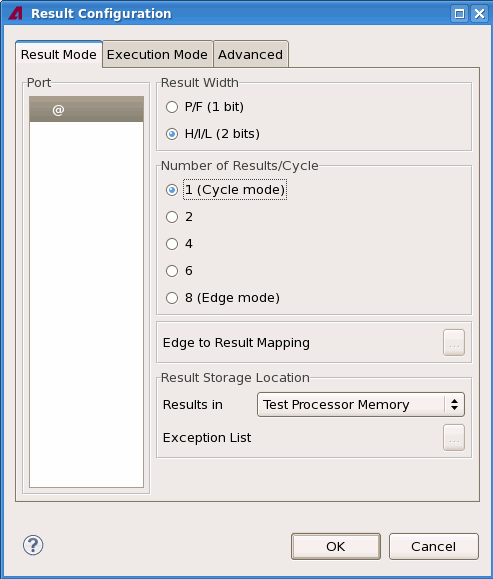
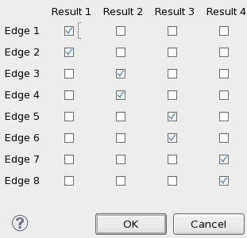
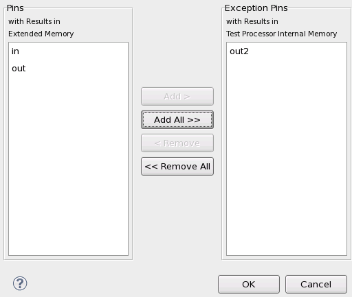

Result Mode
The Result Mode tab allows you configure three recording parameters, namely
- the resolution of the error code (1 bit or 2 bit error codes),
- the result granularity of the detailed error map, and
- the location of the detailed error map.
All these parameters are defined on the port level.
When you open the tab, a list of all configured ports is shown on the left side. The right side is still empty. If you select a port, its default configuration is shown on the panels on the right side (1 result per cycle, 2 bit error code). You can then modify the settings, as in the following figure:

Result Width refers to the resolution of the error code (H/I/L stands for High / Intermediate / Low), Number of Results/Cycle to the result granularity, Edge to Result Mapping to the sub-cycles or result combinations, and Result Storage Location to the selection of the error map location.
Result granularity and error code resolution
Error code resolution and result granularity are not independent of each other. The consistency of the required configuration is checked. If it is inconsistent on the respective system (Pin Scale or Smart Scale), the selected port is marked, and the OK button inactivated. For a complete list of the allowed configurations see Possible combinations of CYRM, CYRP, and DCRM.
The option Edge to Result Mapping is only activated if the selected number of results is 2 or 4 (as in the figure above). In this case you can open the window Edge to Result Mapping of <port> by clicking the ... button.

In this window you can define the result combinations (also called "sub-cycles") to be recorded. Their maximum number is determined by the Number of Results/Cycle option, but you can also define a smaller number of results. Each combination can cumulate any subset of the available 8 edges. In particular, numbering gaps are allowed, and the same edge can be included in more than one result combination.
The default combination for result granularity 4 is shown in the figure above. The default for result granularity 2 is that edges 1 through 4 and edges 5 through 8 each make up one result combination. If you want to report result information on the edge level, you must change this default.
The result granularity setting can be used to prevent a recording abort, if edge results are required, but you are only interested in a subset of the available edges. By recording only the edges of interest you can reduce the amount of data that has to be stored in the error map. For more information see Dealing with storage problems on Smart Scale systems.
Location of the detailed error map
The detailed error map can be located within the test processor (which is the default) or in the external memory. The latter option is recommended when result information is required on the edge level (see Location of the detailed Error Map), because it provides much more space. However, using the external memory can lead to a recording abort if all or most pins of the port belong to the same Smart Scale channel group (4-channel group on PS9G, 8-channel group on PS1600).
But if the detailed edge information is only required for a subset of the port pins, you can put the remaining pins into an exception list. The result data of these pins will then be directed to the internal error map, and thus a recording abort can be avoided in many cases. For more information see again Dealing with storage problems on Smart Scale systems.
This option is only activated if you select Extended Memory for Results in. In this case you can open the window Result Storage of Port <port> by clicking the ... button.

In this window, you can add pins to or remove them from the exception list.
Functional changes
- Introduced in SmarTest 7.1.2